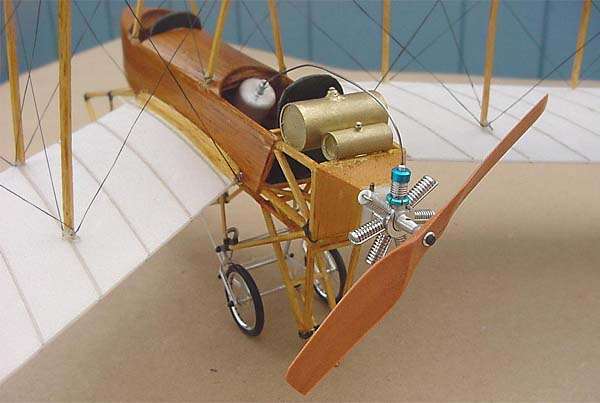
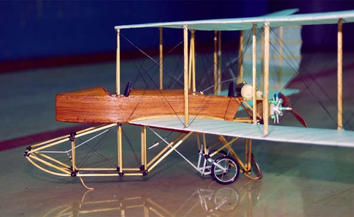
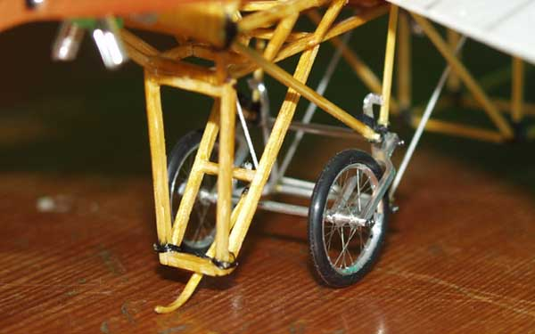
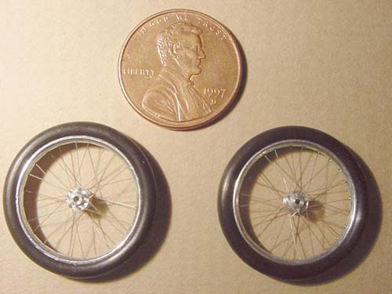
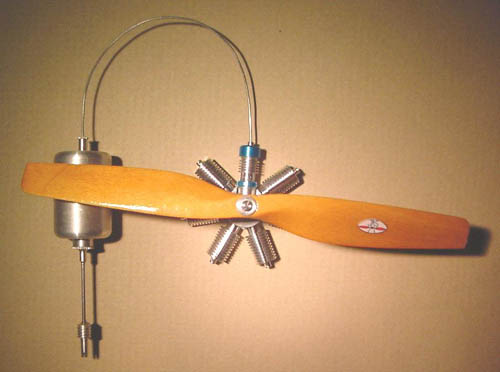

From time to time I am absolutely amazed by the quality of models that get built. |
|
From: Dennis Mead
Date: 11/16/02 I thought I'd send you a pic or two of my first attempt at a pioneer aircraft model, a 1911 Dunne Flying Wing. Needless to say, if I had it to do over again, I'd do things a bit differently. Anyway, I made a drawing scaled up from Ken Munsons' "Pioneer Aircraft" book....had to make a lot of assumptions of what structure should be there or not... had to make many guesses. The wings are 1mm Depron with the ribs drawn on with a tan "sharpie" pen. Wingspan = about 19" All the bamboo skids are fully operational and sprung....as well as the landing gear. There are new wing tip skids which do not show in the pics...had to add them later...they really _are_ necessary. The almost scale bungee cord was liberated from my underwear. I made my spoked wheels from scratch....taking many good hints from the ones I saw on your Demoiselle. They're a bit heavier since the tires are o-rings and the rims are machined aluminum....but they're plenty light just the same. The dummy engine slips on over the crankcase of the CO2 motor and is held on by a dab of rubber cement for easy removal. It's mostly hollow and weighs just over 1 gm. The Dunne glides nicely.....right off the board....but hasn't be flown under power yet....maybe next week.
The next model is on the board already...a "Caudron type A" also from Munson's book. With CO2 of course. |
|
Date: 11/19/02 Alas, at 24 grams, the Dunne is too much weight for the Gasparin G10 shown in these photos. A new set of dummy cylinders has been machined for a G24, and will be mounted shortly. Updates to follow. |


Note the dime leaning against the rear skid!



G24 with dummy motor
return to
Copyright 2002, Thayer Syme. All rights reserved